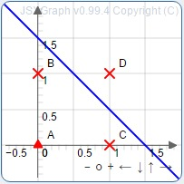
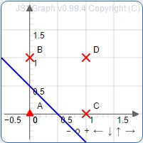

Pre Test
Types of activation functions:-
1. Hard-limit Activation Function
2. Soft-limit (Sigmoidal) Activation Function
3. Piecewise Linear Activation Function
4. Signum Activation Function
Let us consider the problem of building an OR Gate using single layer perceptron.
Following is the truth table of OR Gate.


Referring to the above neural network and truth table, X and Y are the two inputs corresponding to X1 and
X2. Let Y' be the output of the perceptron and let Z' be the output of the neural network after applying the
activation function (Signum in this case). Let the weights be W1=1 and W2=1.
Now,
Y' = X*w1 + Y*w2
Z' = F(Y') ; F is the Activation Function. Let us assume the threshold is 0.5.
Thus, Z' = F(Y') will be defined as
Z' = 1 , Y' >= 0.5
= 0 , Y' < 0.5 For X=0 & Y=0 Y'=X*w1 + Y*w2 Y'=0*1 + 0*1 Y'=0 + 0 Y'=0 Z'=F(Y') Z'=F(0) For Signum
activation function, F(x)=0 ; x < 0.5 Z'=0 For X=0 & Y=1 Y'=X*w1 + Y*w2 Y'=0*1 + 1*1 Y'=0 + 1 Y'=1
Z'=F(Y') Z'=F(1) For Signum activation function, F(x)=1 ; x> 0.5
Z' = 1
For X=1 & Y=0
Y' = X*w1 + Y*w2
Y' = 1*1 + 0*1
Y' = 1 + 0
Y' = 1
Z' = F(Y')
Z' = F(1)
For Signum activation function, F(x) = 1 ; x > 0.5
Z' = 1
For X=1 & Y=1
Y' = X*w1 + Y*w2
Y' = 1*1 + 1*1
Y' = 1 + 1
Y' = 1
Z' = F(Y')
Z' = F(1)
For Signum activation function, F(x) = 1 ; x > 0.5
Z' = 1
Thus we can plot a graph as shown below where ^ represents 0 and X represents 1.
The following procedure is to be followed for the simulation:
After the entire simulation is completed, you will get a popup indicating this completion. Now you may select another Gate and run the simulation.
At any point of time during the simulation, you can stop the simulation by clicking on the button.
The correct outputs will be obtained by the neural network only for certain ranges of inputs.
You can easily visualize this using the graph. When the line (decision boundary) is such that points that
look same are on the same side of the line, then correct output has been obtained.
E.g. In the following plot, similar points are not on the same side of the line..
Hence, the weights and threshold chosen provide an incorrect output for the corresponding Gate.

E.g. In the following plot, similar points are on the same side of the line.
Hence, the weights and threshold chosen provide a correct output for the corresponding Gate.

Note: If you choose negative weights and a negative threshold, then the decision boundary might
recognize similar points in the same class. But here the output will be for the opposite class. To see this,
try -1 as weights and -1.5 as the threshold in AND Gate simulation. This will give incorrect
outputs.
* Hint for all the gates in order to obtain appropriate outputs is given in the Post Test Section.